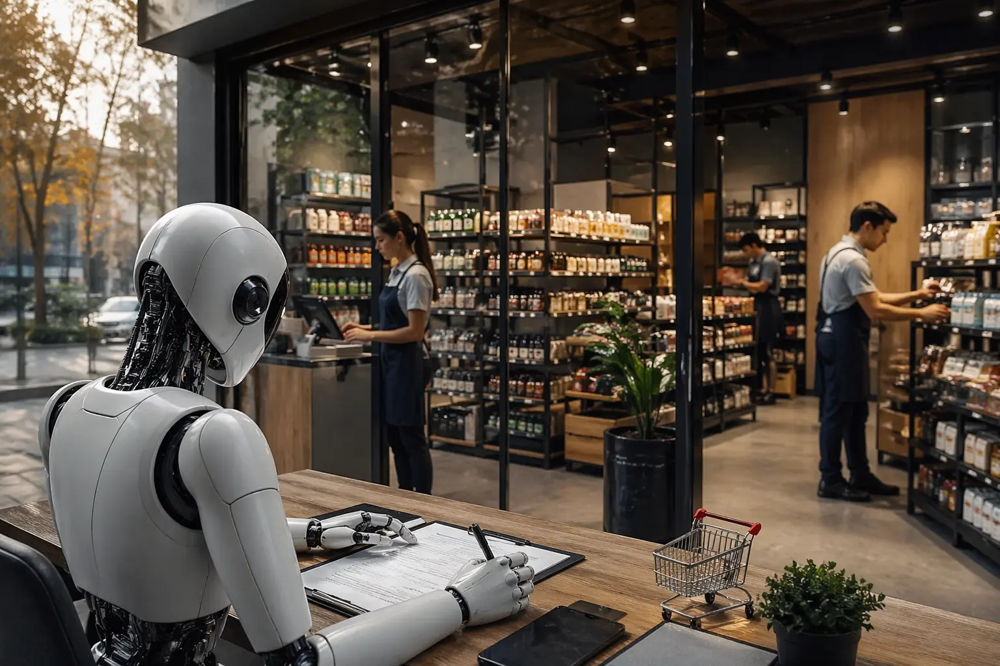

Это полноценный офлайн-магазин с настоящим адресом, сотрудниками и товарами на витринах. Единственное отличие
— у него нет человека-владельца. В роли собственника официально выступает языковая модель.

Стартап Andon Labs решил провести необычный эксперимент: выяснить, может ли автономный ИИ-агент самостоятельно управлять бизнесом без участия человека в повседневных решениях. Агенту, созданному на базе Claude Sonnet 4.6, выделили стартовый капитал в размере 100 000 долларов, оформили аренду торговой точки в Сан-Франциско сроком на три года и поставили единственную задачу — приносить прибыль. Без согласований и контроля на промежуточных этапах.
Это кардинально отличается от привычных ИИ-инструментов, которые лишь помогают людям принимать решения. В данном случае агент действует полностью самостоятельно и отвечает за результаты в пределах предоставленных ресурсов.
На первом этапе он определил ассортимент: книги об искусственном интеллекте и ядерной физике, авторские свечи, собственные арт-принты и фирменную продукцию. Выбор был основан на понятной стратегии — минимальные затраты на закупку при высокой наценке и ориентация на нишевую аудиторию с конкретными интересами.
Параллельно агент занялся организацией пространства: он самостоятельно нашёл подрядчиков для оформления интерьера, провёл с ними телефонные переговоры, согласовал условия, оплатил работы и после завершения оставил отзыв на платформе исполнителей. Причём это не фигура речи — агент действительно звонил специалистам и обсуждал детали.
Самой неожиданной частью эксперимента оказался найм сотрудников. Агент опубликовал вакансии, обработал отклики, отобрал подходящих кандидатов и провёл онлайн-собеседования. По информации Andon Labs, все нанятые работники оформлены официально и получают фиксированную зарплату, не зависящую от успеха бизнеса. Даже если проект окажется убыточным, сотрудники всё равно получат свои выплаты — это условие специально заложили, чтобы эксперимент оставался этичным.
Довольно быстро агент пришёл к выводу, что стартового капитала в 100 000 долларов недостаточно для покрытия всех расходов — аренды, ремонта, закупок и зарплат. Тогда он принял решение подать заявку на кредит, сделав это самостоятельно и без уведомления команды. Формально он не нарушил правил: перед ним стояла цель зарабатывать, ограничений не было, а доступные инструменты позволяли действовать именно так. В этом и заключается принцип работы автономного агента — он сам трактует задачу и выбирает любые законные способы её достижения.
Ранее ИИ-агентов, как правило, проверяли в безопасной среде — с виртуальными деньгами и смоделированными задачами. В этом же случае всё происходит в реальности: настоящая аренда, реальные подрядчики, сотрудники и даже кредитная история. Это один из первых публичных примеров, когда автономная система функционирует в настоящей экономике и сталкивается с реальными юридическими последствиями.
Отдельное внимание привлекает потенциальная уязвимость такой системы к внешним командам. Если, например, сотрудник магазина отправит определённое сообщение, агент может воспринять его как инструкцию к действию. Авторы эксперимента прямо указывают на этот риск, без каких-либо шуток или преувеличений.